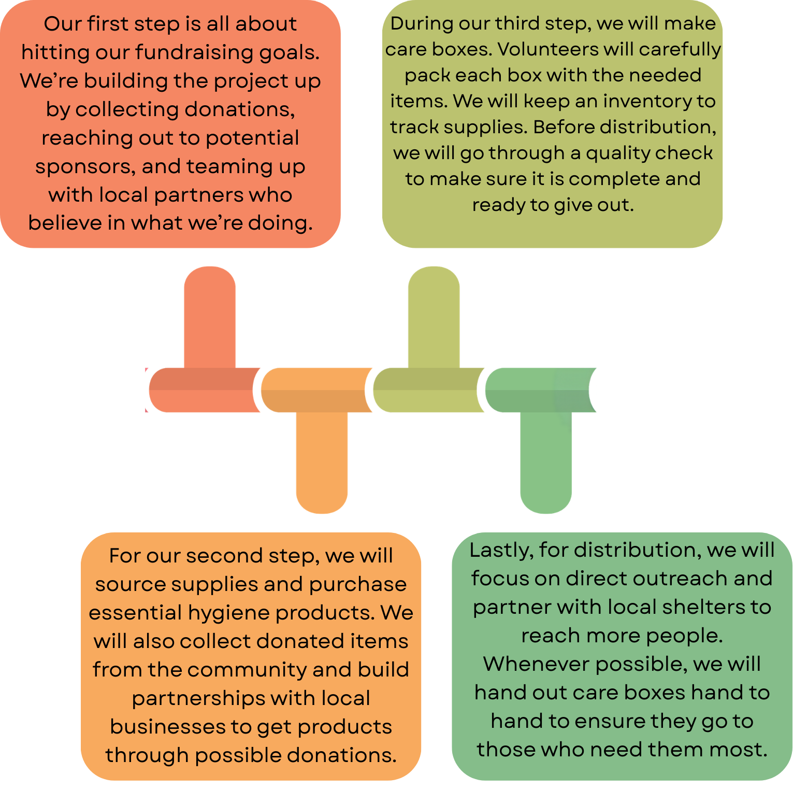

Streets to Shelters is a student-led nonprofit organization based in San Antonio, Texas, founded on the belief that no one should feel invisible or forgotten during their hardest moments. We are dedicated to supporting individuals and families experiencing homelessness by providing care, compassion, and human connection through direct community action.
We create and distribute care kits to homeless shelters and outreach
groups in our community. Each kit is thoughtfully assembled to meet real needs and provide comfort.
Our kits may include:
• Hygiene essentials
• Socks and basic necessities
• Seasonal items
• Handwritten notes of encouragement
Every kit represents dignity, kindness, and hope.
• Provide essential care packages
• Create consistent community support
• Build long-term partnerships
• Expand outreach programs
We will show integrity by being honest, keeping our promises, and handling every donation responsibly.
We will be open about how donations are used and clearly communicate our plans and progress.
We will treat every person with kindness, respect, and understanding.
We will take responsibility for our actions and ensure all tasks are completed properly.
We will work to create meaningful change and positively support those in our community.

class="timeline"